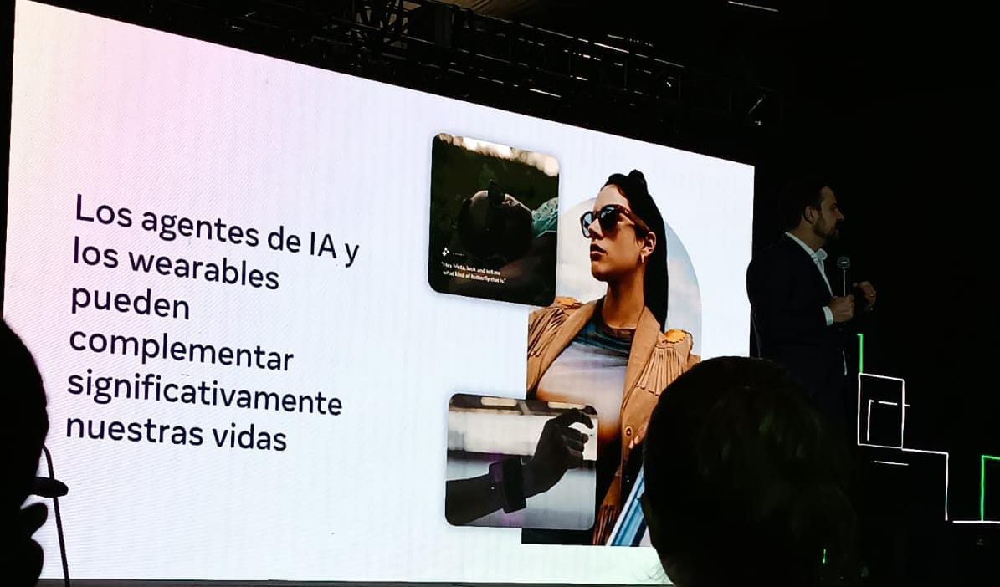
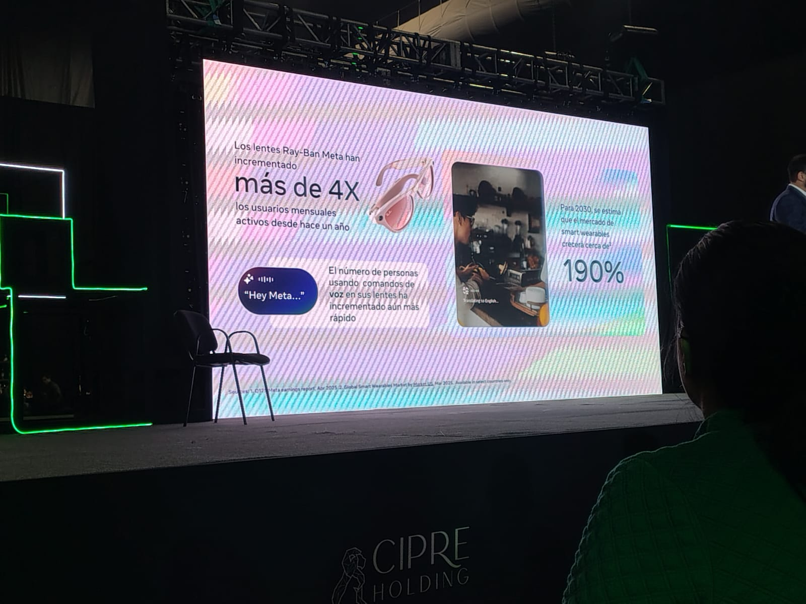
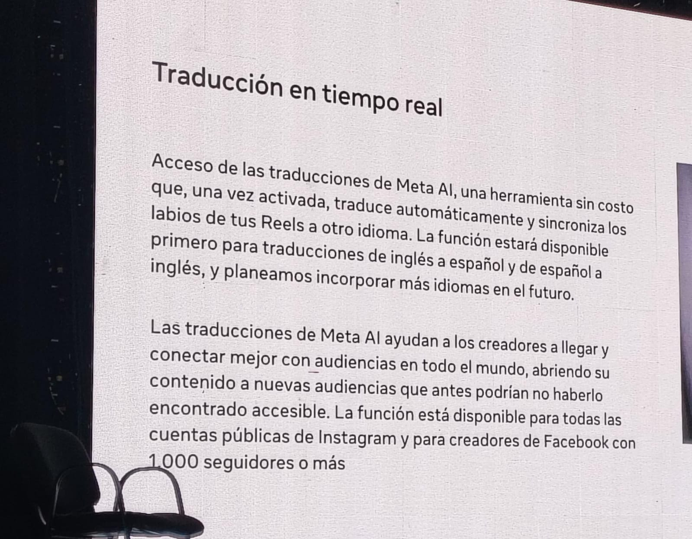

.jpg)
El producto joya de Meta (por el momento) son sus lentes Ray-Ban con IA integrada; estas, estan diseñadas de tal forma en que toda la tecnologia se encuentra en las "patas" de los lentes, que permite varias funciones como:


Para el usuario, es importante conectarlos a sus celulares o bien a su smartwarch, de esta forma se puede tener un mejor control. La función que probamos en el stand fue la de reproducir música, era muy interesante, ya que, aunque te taparas los oídos podías seguir escuchando la música. Aunque una limitante por hora que tienen los lentes es que si yo quiero contestar en una conversacion con otra persona con diferente idioma, en la parte de la traduccion, la otra persona debe leer el texto traducido en el celular; es decir, no te reproduce el audio los lentes.

El principal ponente de Meta fue
Iñigo Fernandez Baptista: El es el director responsable del área de políticas públicas en Mexico, America Central y el Caribe. Durante su espacio, conto como se desarrollaron algunos productos de Meta. Por ejemplo, de Meta Emu Video and Edit, el cual son modelos de edicion de imagen o video multitarea que tratan de establecer un nuevo estado del arte en la edicion de imagenes basadas en instrucciones o prompts.
Uno de los proyectos que se estan desarrollando es el Not Language Left Behind (Ninguna lengua dejada atras). Este se esta desarrollando para evitar el problema de los lentes de IA, pues al generar este proyecto que ocupa modelos de codigo abierto capaces de proorcionar traducciones evaluadas y de alta calidad, va a ser posible brindar a las personas la oportunidad de acceder y compartir contenido web en su idioma natal y de la misma manera comunicarse con cualquier otra persona en cualquier lugar sin que el idioma represente una barrera.
Todos los productos de Meta, se hacen con el objetivo de gestinar el tiempo de los ususarios y librarnos de tareas tediosas que ocupen demasiada atencion. Pues por ejemplo, Fernandez platicaba que los lentes surgieron de la necesidad de cierta persona que ocupaba convivir con sus hijos yendo a paseos de bicicleta donde que al mismo tiempo pueda atender cosas que surgen del trabajo. Por lo que cada tecnologia que crean lo hacen para hacernos la vida mas facil.